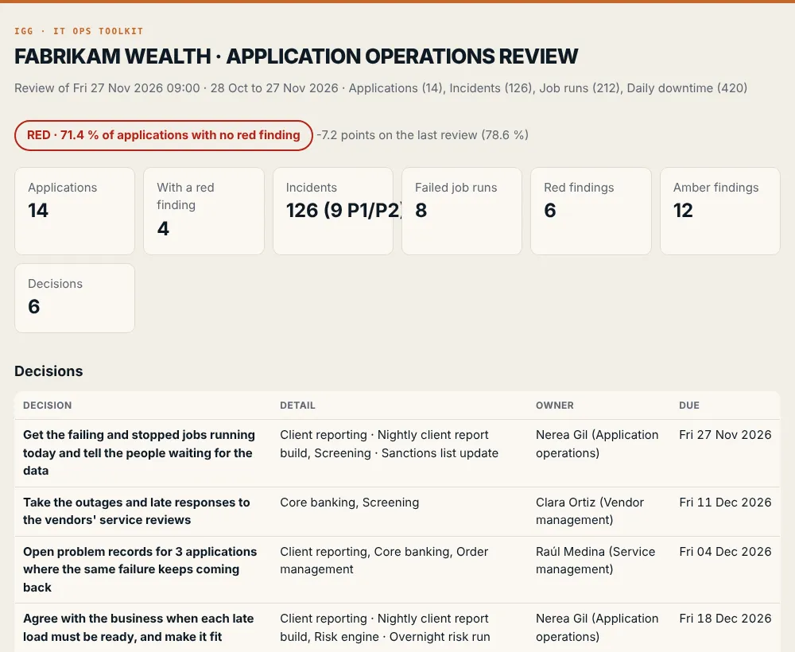

El proceso que actualiza la lista de sanciones se ejecuta cada mañana a las cinco. El martes no se renovó el calendario del planificador, así que el miércoles el proceso simplemente no arrancó. No falló nada, no saltó ninguna alerta, y el filtrado siguió trabajando con una lista vieja hasta que alguien se dio cuenta el jueves. Es lo primero que señala la revisión de operación de aplicaciones que acompaña a este post, un proyecto de código abierto que se ejecuta con datos de ejemplo de una gestora de patrimonios ficticia.
Las aplicaciones de negocio rara vez fallan de golpe; se desgastan una cosa pequeña cada vez, y las señales están repartidas entre el service desk, el planificador, la monitorización y los contratos. La revisión las lee juntas una vez al mes, frente al nivel, el horario de servicio y los objetivos de cada aplicación.
Servicio y proveedores
La banca central estuvo disponible un 99,618% del mes frente a un objetivo del 99,9%, tras tres caídas del lado del proveedor. El contrato dice que el proveedor responde a una P1 en una hora; tardó 3,3 horas en una y 2,1 en otra. El proveedor del filtrado aún no ha contestado una P2 abierta el día anterior. La disponibilidad se mide en el horario de servicio de cada aplicación, así que una caída en domingo no cuenta contra un sistema que solo funciona entre semana.
Incidencias que vuelven
El blotter de órdenes se congeló cinco veces tras la apertura del mercado, y el paquete de informes de clientes llegó tarde cinco veces. Cada vez se abrió y se cerró como una incidencia nueva, y ninguna de las dos tiene un registro de problema, así que nadie es dueño de la causa raíz. Dos de las P1 de la banca central tampoco lo tienen.
Procesos y cargas de datos
La generación nocturna de los informes de clientes falló esta mañana, cuatro veces en el mes, y terminó después de su hora límite de las 06:30 otras siete, así que los gestores empiezan a menudo el día sin sus informes. El cálculo nocturno de riesgos terminó tarde tres veces, esperando a la valoración. Un proceso va tarde cuando termina después de la hora a la que el negocio necesita los datos, no cuando tarda mucho.
Preparadas para un mal día
La última prueba de recuperación del portal de banca online fue hace 19 meses y su runbook tiene tres años. El contrato de soporte del CRM termina en 34 días, la versión del gestor documental pierde el soporte del proveedor en 65 días y la de la intranet ya lo ha perdido, y el motor de riesgos no tiene responsable técnico desde que se fue el anterior.
La demo saca 10 de 14 aplicaciones (71,4%) sin hallazgos rojos, 7,2 puntos menos que en la revisión anterior, con seis hallazgos rojos y 12 ámbar y seis decisiones: poner en marcha hoy los procesos parados y los que fallan, llevar las caídas y las respuestas tardías a las revisiones de servicio con los proveedores, abrir registros de problema, acordar con el negocio las horas de los datos, renovar y actualizar antes de que acabe el soporte, y poner al día runbooks, pruebas de recuperación y responsables.
Cómo usarlo con datos reales
El registro de aplicaciones, con nivel, responsables, proveedor, horario de servicio, objetivos, contrato, soporte de la versión y fechas del runbook y de la prueba de recuperación, es un fichero CSV que mantiene el equipo. Un script de PowerShell de solo lectura exporta las incidencias de ServiceNow con su Table API; las ejecuciones de los procesos salen del planificador o de la herramienta de ETL, y las caídas de la monitorización. Funciona con Python y sin dependencias externas, y genera un informe web, un dosier de una página para la revisión de operación de aplicaciones y ficheros CSV con cada aplicación, proceso, incidencia repetida, hallazgo y acción. Los datos de la demo son ficticios: la empresa, los proveedores, los nombres y las cifras.
De dónde sale
La herramienta nace de llevar aplicaciones de negocio con sus proveedores: ser responsable de aplicaciones y trabajar con herramientas de ETL, SLA y OLA, gestión de la disponibilidad y la capacidad, monitorización con Dynatrace y Datadog, ser dueño de los procesos de incidencias, cambios y problemas, dirigir la respuesta a incidentes graves y sus post-mortem, y gestionar proveedores y sus contratos.
¿Quieres llevarlo a tu entorno o adaptarlo a tu caso? Escríbeme y lo vemos.
Tech Career Lab · newsletter
¿Te ha servido? Cada dos semanas envío una idea práctica para perfiles IT: LinkedIn, proyectos, networking y procesos de selección.
Apúntate y llévate las 33 ideas →